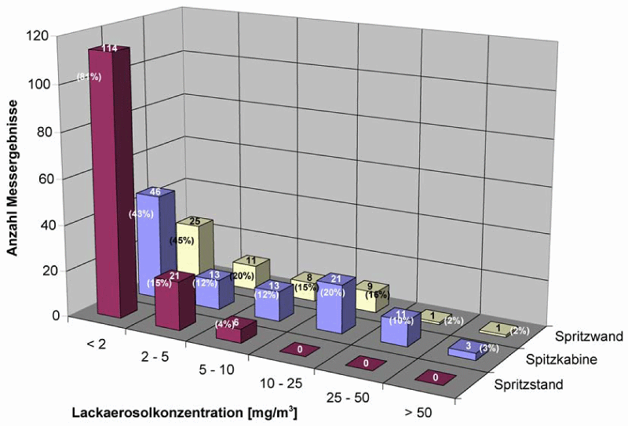

Von den Messstellen der Berufsgenossenschaften und der Arbeitsschutzbehörden der Bundesländer wurden im Rahmen der Aufsichtstätigkeiten im Zeitraum von 1998 bis 2002 insgesamt 303 Messungen der Lackaerosolkonzentration an Spritzlackierarbeitsplätzen in unterschiedlichen Branchen durchgeführt.
Die Messergebnisse zeigen, dass bei Arbeiten an Spritzständen sehr geringe Konzentrationen an Lackaerosolen gefunden wurden; Konzentrationen über 10 mg/m3 sind nicht zu erwarten. In Spritzkabinen und an Spritzwänden wurden deutlich höhere Lackaerosolkonzentrationen festgestellt, die durchaus über 50 mg/m3 betragen können.
